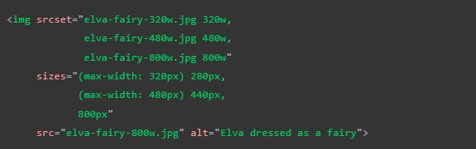
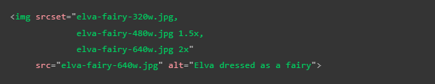

Esta etiqueta tiene la función de vincular archivos de imagen para que se visualicen en la página, para esto se utiliza el atributo "src".
Atributos
src: lugar en el que se almacena la URL del archivo de imagen
width: Define el ancho en la imagen
height: Define el alto en la imagen
alt: Se trata de un texto alterno que describa la imagen, se usa en aquellas situaciones en las que la imagen no pueda ser mostrada, por ejemplo si existe algún error en la carga de las imágenes, o si se utiliza algún motor de lectura en la página
title: Asigna un título a la imagen, sin embargo no es muy utilizado ya que únicamente muestra el título si se posiciona el ratón sobre la imagen, a la vez que puede causar errores en los motores de lectura
Nota: Los motores de búsqueda tienen en cuenta el texto alternativo al realizar alguna, pueden hacer coincidir la búsqueda con este texto
Nota: Desactivar las imágenes es una actividad común en lugares con poco ancho de banda o un costo de internet muy alto, en estos casos el "alt" es muy útil
Nota: Normalmente se utiliza el width y el height en CSS, sin embargo si se usa en HTML, la página reservará el espacio asignado para la imagen aun si esta aún no ha terminado de cargar
Imágenes Adaptables
En la web existen dos tipos de formatos de imagen, los vectoriales y las rasterizadas estas últimas son los formatos como png y jpg los cuales consisten en código que le indica al navegador la posición de cada píxel que compone la imagen, por ello es que la imagen se puede distorsionar cuando se altera el tamaño o proporción de esta, ya que el navegador seguirá esta estructura sin importar qué, empezará a hacer ajustes para seguir cumpliendo con esta estructura.
Debido a esto es que el cómo se aprecie una imagen en nuestra página se verá enormemente determinado por el dispositivo del que se ingrese y por lo tanto por el tamaño de la pantalla de este, por ejemplo si agrandamos una imagen para que cumpla con un tamaño adecuado para visualizarse desde una gran pantalla es muy probable que esta pierda calidad y se pixele, por otro lado si tomamos la misma imagen y la reducimos hasta poder visualizarla adecuadamente en un teléfono móvil es probable que al ser tan pequeña no podamos apreciar adecuadamente el contenido de esta.
A esto es que se refiere una imagen adaptable, se trata de ajustar la imagen al tamaño en el que será visualizada, para ello la solución que se encontró consiste en incorporar varias imágenes en un elemento img cada una editada para visualizarse adecuadamente en un diferente radio de píxeles, por defecto este solo permite vincular una imagen por uso, debido a esto existen los atributos "srcset" y "sizes".
srcset: Define el conjunto de imágenes y su tamaño que el navegador podría elegir según cuál sea la más conveniente para el dispositivo, la estructura para separar cada conjunto de información es con una coma, cada conjunto de información está compuesto por:
El nombre del archivo de imagen
El ancho intrínseco de la imagen en píxeles, este será el tamaño real de la imagen, es importante tener en cuenta que se utiliza la unidad "W" no "px" como en otros casos
Size: Define el conjunto de condiciones de medios en los que se muestra cada imagen, por ejemplo el ancho de la pantalla, por lo tanto define en qué ancho de pantalla sería correcto mostrar cada imagen, está compuesto por:
La condición de medios en la que se indica mostrar cada imagen por ejemplo: (max-width: 600px)
El ancho que finalmente ocupará la imagen cuando la condición de medios se cumpla, por ejemplo: (440px.), por lo general esta se define como menor al ancho de la pantalla para no afectar la experiencia del usuario
Nota: En el ancho de la ranura se debe indicar una longitud absoluta (px, em) o una relativa (porcentaje).
El siguiente es un ejemplo de código, se puede apreciar que el último conjunto de datos en el atributo "size" no posee condición de medios, esto se debe a que es el caso por defecto que se utilizará si ninguno de los casos anteriores se cumple, es importante tener en cuenta el orden de los elementos ya que el navegador elegirá el primer caso que sea compatible e ignorará todo lo que esté posterior a este.

En este código el navegador hace lo siguiente:
Verifica el ancho del dispositivo
Buscará la primera condición de medios que se cumpla
Verificará la medida dada a la imagen en esa consulta de medios
Cargará la imagen en el atributo "srcset" que mejor coincida con la medida asignada para la imagen
Los navegadores desactualizados que no soporten esta característica simplemente la ignorarán y continuarán con la carga común del atributo "src".
Una imagen en disco de 480px siempre tendrá un tamaño mucho menor que una de 800px de ese modo se puede ahorrar ancho de banda y tiempo de carga al iniciar la página web.
Nota: Algunos dispositivos móviles mienten sobre el ancho de su pantalla lo cual no es muy útil para diseños receptivos, incluyendo (meta name="viewport" content="width=device-width") entre los metadatos de la página los obligas a utilizar su ancho real.
Cambiar la resolución de la imagen
Otra forma de mejorar el consumo de ancho de banda así como el tiempo de carga de nuestra página es el de ofrecer como opción al navegador la misma imagen pero con diferentes resoluciones, para esto se utiliza un método similar al anterior, es decir se utiliza el atributo "srcset" haciendo referencia a múltiples imágenes, con la diferencia de que en esta ocasión el tamaño en píxeles de las imágenes no es diferente, sino que se diferencia entre sí por la calidad de cada una.
Esto se realiza con la intención de que el navegador detecte la resolución a la que está trabajando el computador y seleccione la imagen acorde a esta, por lo tanto si el computador está configurado con una resolución alta el navegador seleccionará una imagen con buena resolución, por otro lado si la configuración es para una resolución baja el navegador seleccionará la imagen con menor resolución, esto cobra sentido cuando tenemos en cuenta el espacio en memoria de cada imagen, ya que mientras mayor resolución mayor será el peso de la imagen, de este modo podemos buscar la eficiencia de recursos cargando solo los que sean necesarios en base al dispositivo desde el que se ingrese, un ejemplo de este código sería el siguiente:
